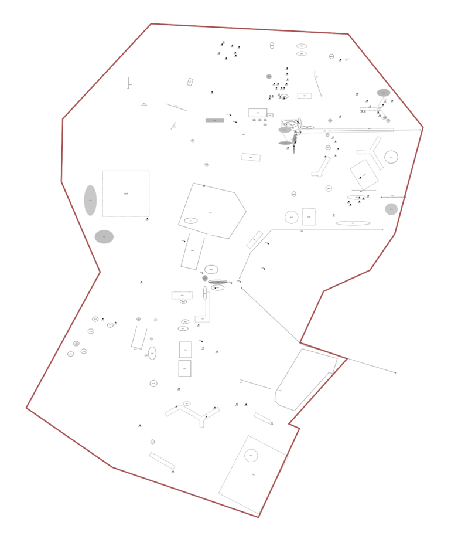
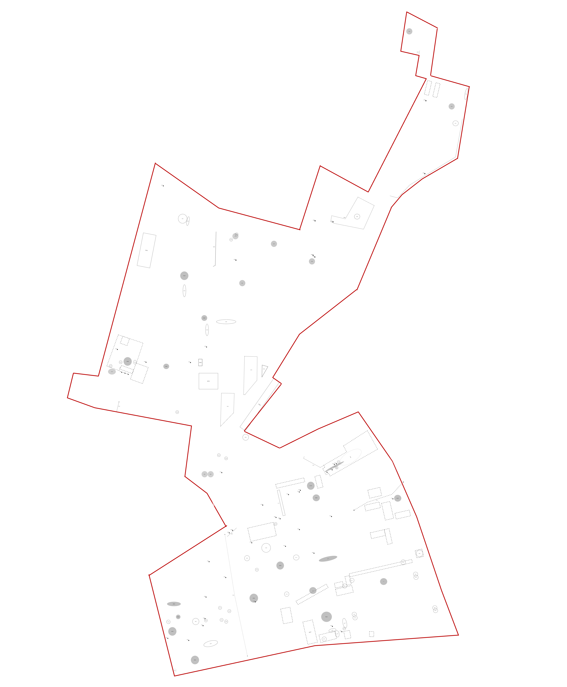

The fragment is defined as a spatial unit identified within a larger urban or architectural fabric, based not only on its physical features but on what happens there. It serves as a lens through which specific tensions, uses, and forms of appropriation become legible. Drawing from what Bruno Latour and Antoine Hennion have called “oligoptics”, the fragment shifts focus to small-scale, overlooked situations as starting points for critical interpretation. In this sense, the fragment is neither purely analytical nor purely projective : it enables the transition from observation to transformation. Christopher Alexander’s theory of patterns also informs this method, where recurring spatial configurations are studied not as fixed models but as living elements embedded in social use. The fragment shares with patterns a concern for repetition and variation, but insists on situated specificity rather than typological abstraction.
This approach is anchored in a sociotechnical perspective: it does not isolate spatial form from use, matter from narrative, or human from non-human actors. Each fragment functions as a composite: a physical space, a practice, and a potential for change.
Located in Toulouse, Le Mirail is a large-scale urban project from the 1960s, designed as a modernist new town. It is now a key site of urban renewal under the NPNRU, marked by the demolition of over 1400 social housing units. The area studied includes Bellefontaine and La Reynerie, both reflecting different phases of the original project by Candilis. This district is both a symbolic architectural site and a contested space: while the municipality frames transformation as necessary for “changing the population,” residents and local collectives actively resist demolition, notably through the national network Stop aux Démolitions. The neighborhood is shaped by a long collective memory, and demolitions have turned certain buildings into powerful narrative sites. The fieldwork highlights these spaces of tension, resistance, and ongoing reappropriation.
This neighborhood, located at the eastern edge of Paris and split by the A3 highway, includes La Noue, the Clos Français, the Malassis and the Plateau. Like Le Mirail, it features post-war slab and tower housing, but without strong heritage status. Though less affected by demolition, the area is undergoing deep transformation under ANRU 2. The removal of key structures such as the Thorez slab and the Clos Français shopping arcade has sparked contestation. Despite official claims of participation, locals often describe the process as opaque and exclusionary. In this context, residents initiated their own forms of consultation. This fieldwork reveals a landscape of emerging uses and community practices, oriented less toward memory than toward the creation of shared futures.
The two neighborhoods are often framed similarly under national urban policy (ANRU), yet their situations diverge. Le Mirail is marked by an ongoing process of erasure and contested redevelopment. La Noue offers an apparent alternative through renovation : but the limits of participation reveal deeper systemic issues. This comparative work resists simplistic opposition between demolition and preservation. It instead reaffirms the need to engage with the smaller scale, the fragment, to construct alternative futures from the ground up.